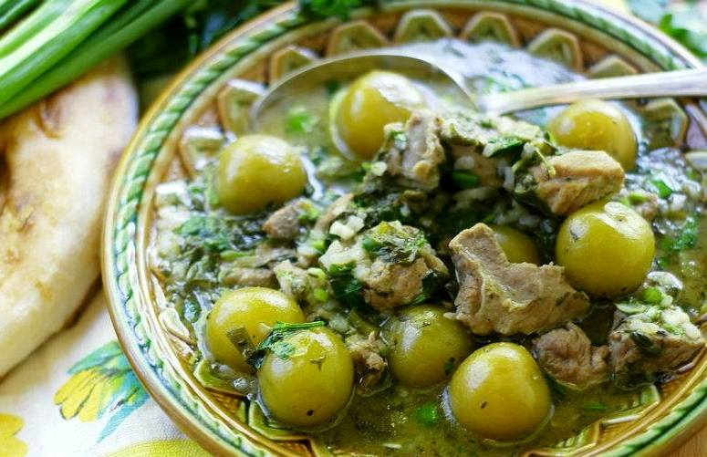

ჩაქაფული

ინგრედიენტები
- 700 გრამი ბატკნის ან ძროხის ხორცი
- 200 გრამი ტარხუნა
- 150 გრამი ქინძი
- 200 მლ/ლ თეთრი ღვინო
- 1 ლიტრი წყალი
- 150 გრამი მჟავე ალუჩა
- 200 გრამი მწვანე ხახვი
- 30 გრამი ნიორი
- მარილი გემოვნებით
მომზადების საფეხურები
-
ღრმა ქვაბში მოათავსეთ ბატკნის ან საქონლის დაჭრილი ხორცი. დაასხით 200 მლ
თეთრი ღვინო და ხარშეთ დაბალ ტემპერატურაზე, დაახლოებით 15–20 წუთით,
ღვინის შემცირებამდე. დროდადრო ხის კოვზით მოურიეთ.
-
სანამ ხორცი იხარშება, ტარხუნის ღეროებს მოაცალეთ ფოთლები, ღეროები
გადაყარეთ, ფოთლები კი დაჭერით. წვრილად დაჭერით ხახვი, ქინძი და მწვანე
წიწაკა. დაჭყლიტეთ ნიორი.
-
როცა ქვაბში ღვინის რაოდენობა შემცირდება, ხორცს დაჭრილი ინგრედიენტები,
ნიორი და ალუჩა დაუმატეთ. დაასხით 1 ლიტრი წყალი და ქვაბს დააფარეთ. ხარშეთ
დაბალ ტემპერატურაზე, დაახლოებით 1 საათით.
- ურიეთ დროდადრო. ხარშვის დასასრულს დაუმატეთ მარილი გემოვნებით.
-
მიირთვით თბილი. ფრთხილად იყავით, რომ მირთმევისას ალუჩის კურკები არ
შეგყვეთ.